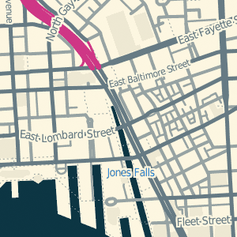
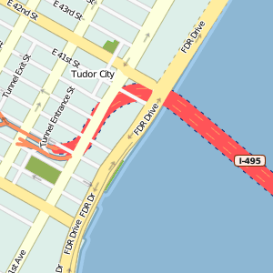
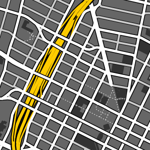
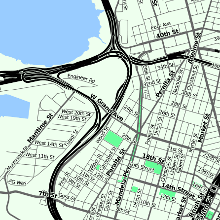

Tile Drawer ♥ Tile Mill
This is a placeholder page for more information about how to use Tile Drawer with TileMill. Check back here soon for more information.
—Michal Migurski, February 2012.

Contact: info@tiledrawer.com
Logo & illustration by Nicolas Marichal, USE-IT.
Styles
I have a few ready-made map styles to choose from below. I’ll be expanding this list with new ones soon, and if you have one to contribute let me know.

Solar
Developed to create maximally-compressed tiles to fit onto a portable GIS / disaster response system from Tethr with colors sampled from Ethan Schoonover’s Solarized. Read more about Solar.

Bright
This is the style that originally shipped with Cascadenik in 2008. It’s largely primary colors, and has definitions for a variety of scales. Residential roads are used for texture at small scales. The road widths defined here later informed Stamen’s design work for Cloudmade. Read more about Bright.

Wintermute
Dark ground with light-colored water, entirely gray with motorways highlighted in bright saffron. No text. Designed for OSM High Road.

Scratch
Demonstration style produced for the 2010 Where 2.0 Maps From Scratch workshop, where Stamen colleague Shawn Allen and I showed how to generate road cartography from raw data and first principles. Scratch is designed to work at just a few scales.